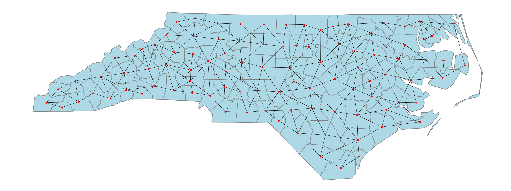
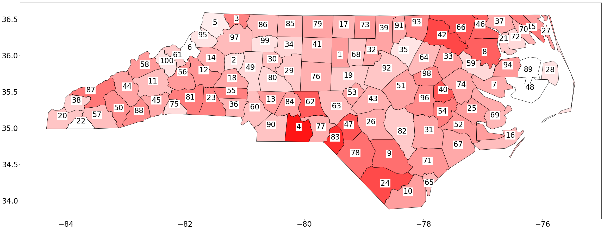

Download this page as a Jupyter notebook src/notebooks/application-SIDS-NorthCarolina.ipynb.
SIDS application — NorthCarolina
References
[1]:
%load_ext autoreload
%autoreload 2
%matplotlib inline
import warnings
warnings.filterwarnings('ignore')
Version Information
[2]:
import echelon
import matplotlib
# For some reason, NetworkX plot functionality (nx.draw()) seems to fail with a newer matplotlib:
# https://stackoverflow.com/questions/63198347/attributeerror-module-matplotlib-cbook-has-no-attribute-iterable
assert matplotlib.__version__ =='2.2.3'
from echelon.contrib.geo import required_modules
for module in [echelon, matplotlib] + required_modules:
print(module.__name__, module.__version__)
echelon 1.0.3
matplotlib 2.2.3
geopandas 0.10.2
libpysal 4.5.1
Downloading Data
[3]:
import urllib.request
from pathlib import Path
import zipfile
import shutil
data_dir = Path('data/application-SIDS-NorthCarolina')
data_dir.mkdir(exist_ok=True, parents=True)
_filename = data_dir / 'sids.zip'
if not _filename.exists():
urllib.request.urlretrieve('https://geodacenter.github.io/data-and-lab//data/sids.zip', _filename)
if not (data_dir / 'sids').exists():
with zipfile.ZipFile(_filename) as _f:
_f.extractall(data_dir)
for _p in (data_dir / 'sids').glob("*"):
shutil.move(str(_p), str(data_dir))
print([a.name for a in (data_dir).iterdir()])
['sids.shx', 'sids.shp', 'sids.gdb', 'sids.dbf', 'sids.sqlite', 'sids.csv', '__MACOSX', 'sids.xlsx', 'sids.prj', 'sids.html', 'sids.zip', 'sids.kml', 'sids.geojson', 'sids', 'sids.gpkg']
[4]:
import numpy as np
import pandas as pd
import geopandas as gpd
from echelon.api import DataFrameEchelonAnalysis
from echelon.contrib.geo import GISAdjacency
from echelon.contrib.geo import GISPlotter
df = pd.read_csv(data_dir / 'sids.csv',
dtype={
'BIR74': 'Int64',
'SID74': 'Int64',
'NWBIR74': 'Int64',
'BIR79': 'Int64',
'SID79': 'Int64',
'NWBIR79': 'Int64',
}
)
df['cas'] = df['SID74'] + df['SID79']
df['pop'] = df['BIR74'] + df['BIR79']
df['rate'] = df['cas'] * 1000 / df['pop']
adjacency = GISAdjacency.from_shapefile(data_dir / 'sids.shp', id_colname='NAME')
## Plot adjacency graph
import matplotlib.pyplot as plt
adjacency.plot()
plt.show()
adj_series = adjacency.to_series()
# display(df)
df = df.merge(adj_series)
# from IPython.display import display
# display(adj_series)
## Construct Echelon
analyzer = DataFrameEchelonAnalysis()
result = analyzer(df, 'rate', 'NAME', 'adjacency')
## Scan hot spots
hotspots = analyzer.hotspots(result, data=(df, 'NAME', 'cas', 'pop'), score='binomial')
## Plot hot spots
#GISPlotter(, 'name').plot_hotspot(hotspots, label_col='name', nth=1, id_col='SIKUCHOSON')

[5]:
plotter = GISPlotter(pd.concat((adjacency.gdf, df), axis=1), name_col='CRESS_ID')
#plotter.gdf['rate']
plotter.plot_values('rate', lambda v: (v / 6))
None

[6]:
print(analyzer.dendrogram(result))
E31(Davidson): [Tyrrell, Clay, Avery, Hyde, Ashe, Yancey, Franklin, Dare, Watauga, Alexander, Yadkin, Polk, Perquimans, Martin, Iredell, Rowan, Forsyth, Graham, Chowan, Sampson, Chatham, Mitchell, Davidson]
(max: 1.2646221941195068)
├── E30(Wilkes): [Orange, Wake, Cherokee, Union, Mecklenburg, Macon, Buncombe, Carteret, Wilkes]
│ (max: 1.6009314510260515)
│
│ ├── E29(Surry): [Surry]
│ │ (max: 1.6166960611405057)
│ │
│ │ ├── E28(Harnett): [Moore, Nash, Stokes, Guilford, New Hanover, Pamlico, Caswell, Pasquotank, Harnett]
│ │ │ (max: 1.8680677174547577)
│ │ │
│ │ │ ├── E27(Randolph): [Randolph]
│ │ │ │ (max: 1.868791187174191)
│ │ │ │
│ │ │ │ ├── E26(Richmond): [Richmond]
│ │ │ │ │ (max: 1.8758526603001364)
│ │ │ │ │
│ │ │ │ │ ├── E25(Gates): [Beaufort, Gates]
│ │ │ │ │ │ (max: 1.9723865877712032)
│ │ │ │ │ │
│ │ │ │ │ │ ├── E24(Vance): [Onslow, Vance]
│ │ │ │ │ │ │ (max: 2.027163997567403)
│ │ │ │ │ │ │
│ │ │ │ │ │ │ ├── E22(Duplin): [Cumberland, Duplin]
│ │ │ │ │ │ │ │ (max: 2.091254752851711)
│ │ │ │ │ │ │ │
│ │ │ │ │ │ │ │ ├── E19(Edgecombe): [Pitt, Johnston, Craven, Washington, Edgecombe]
│ │ │ │ │ │ │ │ │ (max: 2.370259481037924)
│ │ │ │ │ │ │ │ │
│ │ │ │ │ │ │ │ │ ├── E5(Greene): [Jones, Wayne, Wilson, Lenoir, Greene]
│ │ │ │ │ │ │ │ │ │ (max: 3.90625)
│ │ │ │ │ │ │ │ │ │
│ │ │ │ │ │ │ │ │ └── E3(Halifax): [Warren, Hertford, Bertie, Northampton, Halifax]
│ │ │ │ │ │ │ │ │ (max: 4.336513443191674)
│ │ │ │ │ │ │ │ │
│ │ │ │ │ │ │ │ └── E17(Robeson): [Brunswick, Pender, Robeson]
│ │ │ │ │ │ │ │ (max: 3.3576814326107445)
│ │ │ │ │ │ │ │
│ │ │ │ │ │ │ │ ├── E4(Columbus): [Bladen, Columbus]
│ │ │ │ │ │ │ │ │ (max: 4.270082732852949)
│ │ │ │ │ │ │ │ │
│ │ │ │ │ │ │ │ └── E2(Scotland): [Hoke, Scotland]
│ │ │ │ │ │ │ │ (max: 4.926108374384237)
│ │ │ │ │ │ │ │
│ │ │ │ │ │ │ └── E11(Person): [Durham, Granville, Person]
│ │ │ │ │ │ │ (max: 2.3909145248057384)
│ │ │ │ │ │ │
│ │ │ │ │ │ └── E7(Camden): [Currituck, Camden]
│ │ │ │ │ │ (max: 3.1446540880503147)
│ │ │ │ │ │
│ │ │ │ │ └── E20(Stanly): [Stanly]
│ │ │ │ │ (max: 2.2242817423540315)
│ │ │ │ │
│ │ │ │ │ ├── E13(Cabarrus): [Cabarrus]
│ │ │ │ │ │ (max: 2.354627354627355)
│ │ │ │ │ │
│ │ │ │ │ └── E1(Anson): [Montgomery, Anson]
│ │ │ │ │ (max: 5.515239477503629)
│ │ │ │ │
│ │ │ │ └── E14(Alamance): [Rockingham, Alamance]
│ │ │ │ (max: 2.2990707922214773)
│ │ │ │
│ │ │ └── E15(Lee): [Lee]
│ │ │ (max: 2.1149778888675255)
│ │ │
│ │ └── E9(Alleghany): [Alleghany]
│ │ (max: 2.9154518950437316)
│ │
│ └── E23(Henderson): [Gaston, Caldwell, Catawba, Henderson]
│ (max: 2.079002079002079)
│
│ ├── E21(Haywood): [Haywood]
│ │ (max: 2.1867483052700636)
│ │
│ │ ├── E18(Jackson): [Jackson]
│ │ │ (max: 2.644503211182471)
│ │ │
│ │ │ ├── E10(Transylvania): [Transylvania]
│ │ │ │ (max: 2.7195027195027195)
│ │ │ │
│ │ │ └── E6(Swain): [Swain]
│ │ │ (max: 3.209242618741977)
│ │ │
│ │ └── E12(Madison): [Madison]
│ │ (max: 2.365464222353637)
│ │
│ └── E8(Rutherford): [McDowell, Burke, Lincoln, Cleveland, Rutherford]
│ (max: 3.06044376434583)
│
└── E16(Davie): [Davie]
(max: 1.5122873345935728)
[7]:
df
[7]:
| AREA | PERIMETER | CNTY_ | CNTY_ID | NAME | FIPS | FIPSNO | CRESS_ID | BIR74 | SID74 | NWBIR74 | BIR79 | SID79 | NWBIR79 | cas | pop | rate | adjacency | |
|---|---|---|---|---|---|---|---|---|---|---|---|---|---|---|---|---|---|---|
| 0 | 0.114 | 1.442 | 1825 | 1825 | Ashe | 37009 | 37009 | 5 | 1091 | 1 | 10 | 1364 | 0 | 19 | 1 | 2455 | 0.407332 | [Wilkes, Watauga, Alleghany] |
| 1 | 0.061 | 1.231 | 1827 | 1827 | Alleghany | 37005 | 37005 | 3 | 487 | 0 | 10 | 542 | 3 | 12 | 3 | 1029 | 2.915452 | [Ashe, Wilkes, Surry] |
| 2 | 0.143 | 1.630 | 1828 | 1828 | Surry | 37171 | 37171 | 86 | 3188 | 5 | 208 | 3616 | 6 | 260 | 11 | 6804 | 1.616696 | [Alleghany, Wilkes, Yadkin, Forsyth, Stokes] |
| 3 | 0.070 | 2.968 | 1831 | 1831 | Currituck | 37053 | 37053 | 27 | 508 | 1 | 123 | 830 | 2 | 145 | 3 | 1338 | 2.242152 | [Camden, Dare] |
| 4 | 0.153 | 2.206 | 1832 | 1832 | Northampton | 37131 | 37131 | 66 | 1421 | 9 | 1066 | 1606 | 3 | 1197 | 12 | 3027 | 3.964321 | [Warren, Bertie, Hertford, Halifax] |
| ... | ... | ... | ... | ... | ... | ... | ... | ... | ... | ... | ... | ... | ... | ... | ... | ... | ... | ... |
| 95 | 0.225 | 2.107 | 2162 | 2162 | Bladen | 37017 | 37017 | 9 | 1782 | 8 | 818 | 2052 | 5 | 1023 | 13 | 3834 | 3.390715 | [Pender, Cumberland, Columbus, Robeson, Sampson] |
| 96 | 0.214 | 2.152 | 2185 | 2185 | Pender | 37141 | 37141 | 71 | 1228 | 4 | 580 | 1602 | 3 | 763 | 7 | 2830 | 2.473498 | [Columbus, New Hanover, Brunswick, Duplin, Ons... |
| 97 | 0.240 | 2.365 | 2232 | 2232 | Columbus | 37047 | 37047 | 24 | 3350 | 15 | 1431 | 4144 | 17 | 1832 | 32 | 7494 | 4.270083 | [Pender, Brunswick, Robeson, Bladen] |
| 98 | 0.042 | 0.999 | 2238 | 2238 | New Hanover | 37129 | 37129 | 65 | 5526 | 12 | 1633 | 6917 | 9 | 2100 | 21 | 12443 | 1.687696 | [Pender, Brunswick] |
| 99 | 0.212 | 2.024 | 2241 | 2241 | Brunswick | 37019 | 37019 | 10 | 2181 | 5 | 659 | 2655 | 6 | 841 | 11 | 4836 | 2.274607 | [Pender, Columbus, New Hanover] |
100 rows × 18 columns